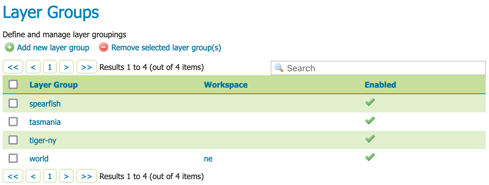
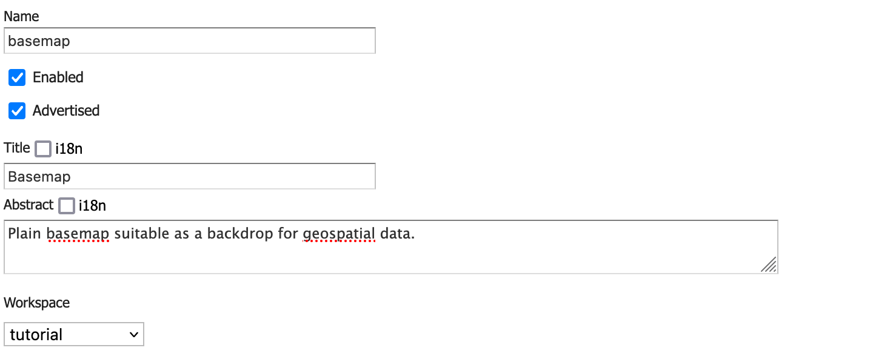
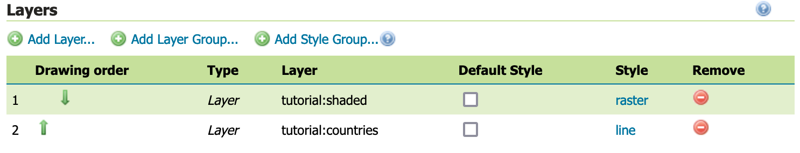
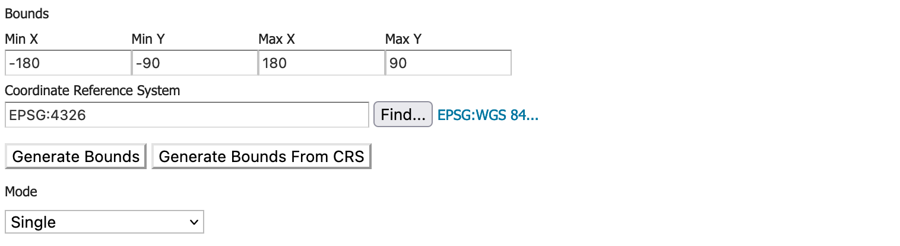
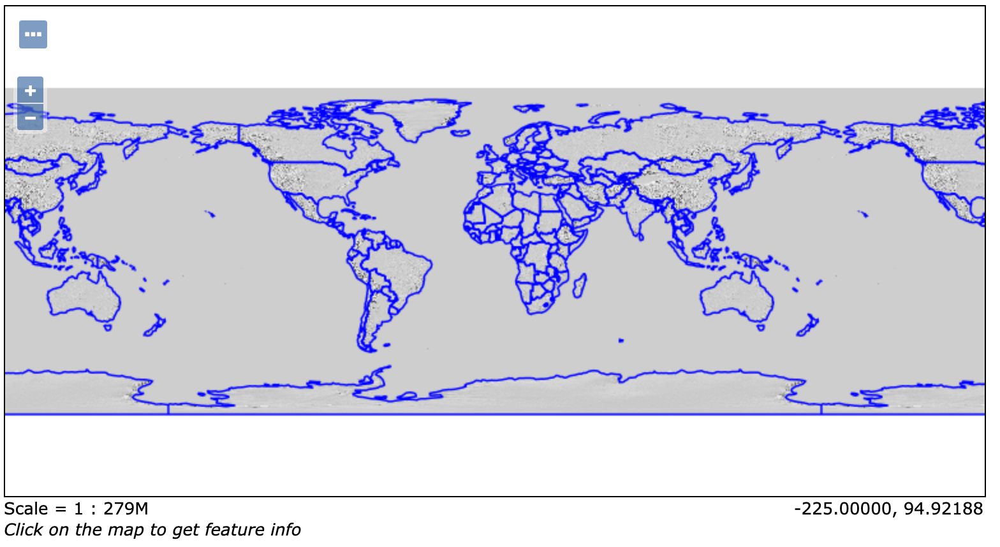

Publishing a Layer Group¶
This tutorial walks through the steps of publishing a layer group combing several layers into a basemap.
Note
This tutorial assumes that GeoServer is running at http://localhost:8080/geoserver.
Data preparation¶
First let’s gather that the data that we’ll be publishing.
Complete the previous tutorials:
Publishing a GeoPackage defining the tutorial:countries layer
Publishing a Image defining the tutorial:shaded layer
Create a layer group¶
Navigate to page.
Layer Groups¶
This page displays a list of layer groups, workspace that the group belongs to.
Note
Layer groups are allowed to be “global” allowing a map to be created combing layers from several workspaces into a single visual.
At the top of the list Layer Groups locate and click the Add new layer group link.
The Layer group editor defines
Basic Resource Info - describes how the layer is presented to others
Coordinate Reference System - establishes how the spatial data is to be interpreted or drawn on the world
Bounding Boxes - establishes where the dataset is located in the world
Layers - the layers to be drawn (listed in draw order)
Locate Basic Resource Info and define the layer:
Name
basemap
Title
Basemap
Abstract
Plain basemap suitable as a backdrop for geospatial data.
Workspace
tutorialBasic resource information¶
Scroll down to the Layers list which is presently empty.
Click Add Layer link, select the
tutorial:shadedlayer first.The raster should be drawn first, as other content will be shown over top of it.
Click Add Layer link, select the
tutorial:countrieslayer second.This polygon layer will be drawn second.
Locate the
tutorial:countrieslayer in the list and click the Style entry to changepolygontoline.By drawing only the outline of the countries the shaded relief can show through.
Layer group layers in drawing order¶
Locate the Coordiante Reference Systems and press Generate Bounds.
Now that layers are listed we they can be used to determine the corodinate reference system and bounds of the layer group.
Coordinate Reference Systems¶
Press Save complete your layer group.
Previewing the layer¶
In order to verify that the tutorial:basemap layer is published correctly, we can preview the layer.
Navigate to the page and find the
tutorial:basemaplayer.Note
Use the Search field with tutorial as shown to limit the number of layers to page through.
Click the OpenLayers link in the Common Formats column.
An OpenLayers map will load in a new tab. This preview is used to zoom and pan around the dataset, as well as display the attributes of features.
Preview basemap¶